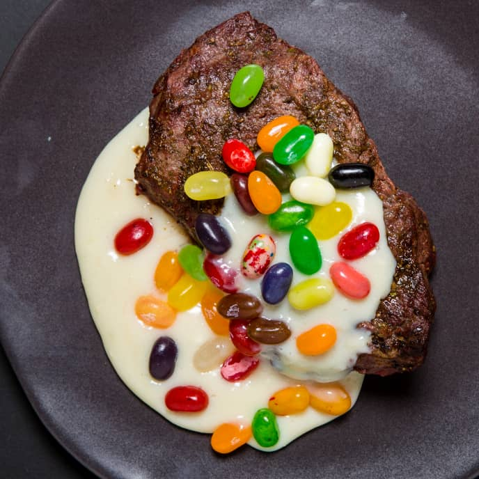

Milksteak

ingredients
- 1 cup whole milk
- 1 sixteen ounce filet mignion
- 1 cup jellybeans, raw
- 1/2 cup sweetened condensed milk
- 1/2 teaspoon cornstarch
Steps
- mix all milk ingredients with the cornstarch on a pot at low heat
- when reaches 200f put steak into concotion
- take steak out after 15 minutes
- garnish with milksauce and jellybeans
- serve
Return to main page